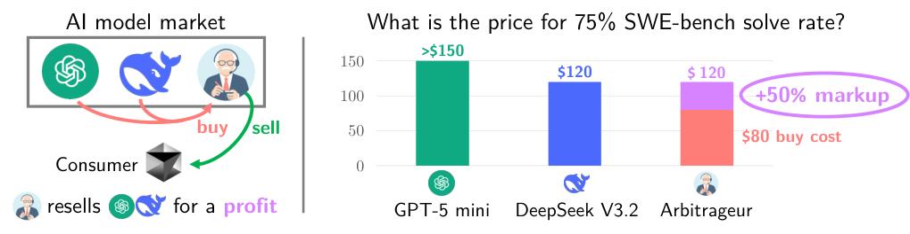

An appendix replicates the arbitrage and distillation experiments on Lean 4 theorem proving, using the Lean compiler to verify proofs and NuminaMath-LEAN seed problems.
Abstract
Consider a market of competing model providers selling query access to models with varying costs and capabilities. Customers submit problem instances and are willing to pay up to a budget for a verifiable solution. An arbitrageur efficiently allocates inference budget across providers to undercut the market, thus creating a competitive offering with no model-development risk. In this work, we initiate the study of arbitrage in AI model markets, empirically demonstrating the viability of arbitrage and illustrating its economic consequences. We conduct an in-depth case study of SWE-bench GitHub issue resolution using two representative models, GPT-5 mini and DeepSeek v3.2. In this verifiable domain, simple arbitrage strategies generate net profit margins of up to 40%. Robust arbitrage strategies that generalize across different domains remain profitable. Distillation further creates strong arbitrage opportunities, potentially at the expense of the teacher model's revenue. Multiple competing arbitrageurs drive down consumer prices, reducing the marginal revenue of model providers. At the same time, arbitrage reduces market segmentation and facilitates market entry for smaller model providers by enabling earlier revenue capture. Our results suggest that arbitrage can be a powerful force in AI model markets with implications for model development, distillation, and deployment.
Problem
AI model markets offer many models with different costs and capabilities. When solutions are verifiable, an arbitrageur could combine providers to deliver a target performance level more cheaply than any single provider. The viability and economic consequences of such computational arbitrage had not been studied.
Approach
Computational arbitrage is formalized via cost–performance curves derived from repeated sampling and pass@k estimates. Simple switch-over policies (query one model, then another) are evaluated on SWE-bench Verified with GPT-5 mini and DeepSeek v3.2. Small Qwen 3 1.7B models are distilled from Qwen Coder outputs to study how distillation creates arbitrage opportunities. The experiments are replicated in Appendix C for Lean 4 formal theorem proving, using NuminaMath-LEAN problems and Lean compiler verification.

Figure 1: Consider a model market with three providers: GPT-5 mini, DeepSeek v3.2, and an arbitrageur. Consumers demand a target level of performance on SWE-bench–type tasks; for example, a 75% SWE-bench solve rate. Through repeated sampling, GPT-5 mini and DeepSeek each achieve a 75% SWE-bench solve rate at costs of $150 and $120, respectively. The arbitrageur instead sources generations by first
Results
Simple arbitrage strategies reach net profit margins of up to 40% on SWE-bench, and robust strategies remain profitable across domains. More distillation increases arbitrage profitability and can erode teacher-model revenue. Competing arbitrageurs lower consumer prices and ease market entry for smaller providers. The Lean 4 experiments show consistent findings.